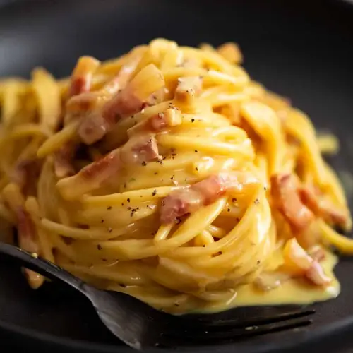

A recipe for a traditional carbonara

Spaghetti carbonara
Here is the only carbonara recipe you will ever need to follow! The original, the best, traditional carbonara.
Ingredients:
Guanciale (pancetta, bacon as subsitute)
Pecerino (parmessan as subsitute)
Steps:
First of all put a large pan of water to boil.
Finally chop the guanciale into fine chunks (or bacon,pancetta).
In a bowl gently whisk 3 egg yolks,grate about a handful of the pecerino(or parmessan)
and add a generous amount of black pepper.
Add 1 tsp salt to the boiling water, add the spaghetti and when the water comes back to the boil,
cook at a constant simmer, covered, for 10 minutes or until al dente (just cooked).
Whilst the spaghetti is cooking, fry the guanciale in a frying pan. Do not add salt. Cook on a medium heat until crisp and golden
Keep the heat under the pancetta on low. When the pasta is ready, lift it from the water with a pasta fork or tongs and put it in the frying pan with the pancetta.
Don’t worry if a little water drops in the pan as well (you want this to happen) and don’t throw the pasta water away yet.
Take the pan of spaghetti and pancetta off the heat. Now quickly pour in the eggs and cheese. Using the tongs or a long fork,
lift up the spaghetti so it mixes easily with the egg mixture, which thickens but doesn’t scramble, and everything is coated.
Add extra pasta cooking water to keep it saucy (several tablespoons should do it).
Use a long-pronged fork to twist the pasta on to the serving plate or bowl.
Serve immediately with a little sprinkling of the remaining cheese and a grating of black pepper.